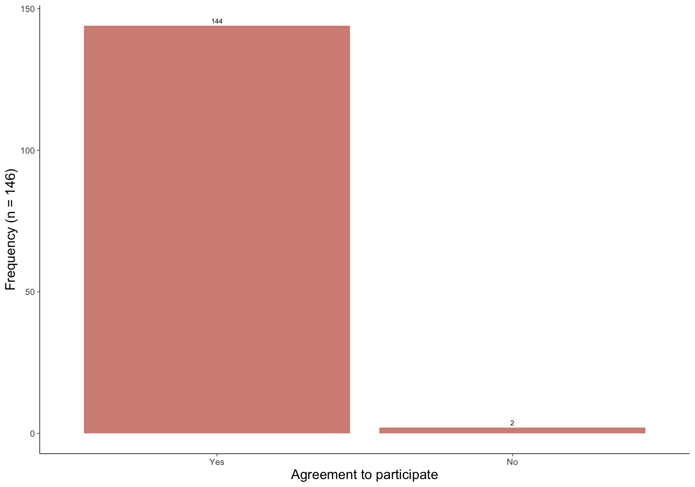

Marmion RUM Data
Nicole Hamre
29 August, 2022
MEG Mission statement: Optimising human use of the ocean
Data
Data for recreational marine use in daterance was collected through face-to-face surveys at boat launches. The surveys facilitated the collection of multi-use data and multi-greement data.The survey had a 99% response rate with 144 participants, of those 141 survey were first instance or single agreement surveys and 3 were multi-agreement surveys (survey participant surveyed for a second or more times). This produced a total of 154 spatial use data points, 10 of which were part of multi-use trips (excluding first instance).
Response
The plot below shows the number of agreements, refusals and non-eligible people that were approached in the sampling process. 
Demographics
Locality
The plot below shows how many of the participants were residents and visitors.
Age
The plot below shows the ages of participants.
Gender
The plot below shows the gender of participants.
Fishing Avidity
The plot below shows the fishing avidity of participants.
Use
Overall
This map shows the kernel density of all boat based uses, extractive and non-extractive.
Activity Type
The plots below shows how many surveys are relevant to extractive and non-extractive activities and there spatial distribution.
Activities
The plots below shows what activities participants conducted and there spatial distribution.
Extractive use
Boat based
Fishing type
Spatial distribution and kernel density